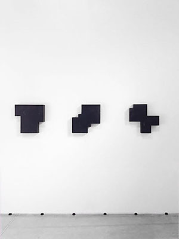 |
The Wilmotte Foundation, Venice, Italy Juin-June / Novembre-November 2013 |
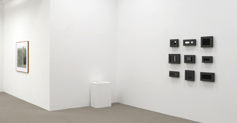 |
Galerie m Bochum, Bochum, Allemagne/Germany Septembre 2012-Janvier 2013/September 2012-January 2013 |
 |
Granville Gallery Paris, Paris, France Septembre-Octobre 2012/September-October 2012 |
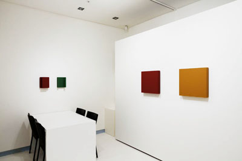 |
Song Art Gallery, Seoul, Corée/Korea Août-Septembre 2012/August-September 2012 |
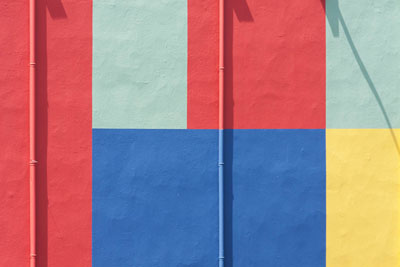 |
Rue Vuillerme, Lyon, France Avril 2012/April 2012 |
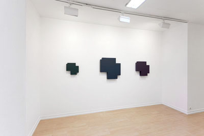 |
Galerie Oniris, Rennes, France Septembre-Octobre 2011/September-October 2011 |
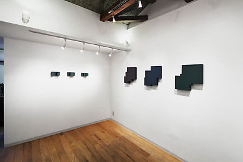 |
Spectrum Gallery, Osaka, Japan Avril-Mai 2011/April-May 2011 |
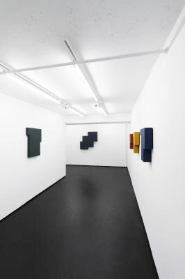 |
Granville Gallery, Paris, France Mars-Avril 2011/March-April 2011 |
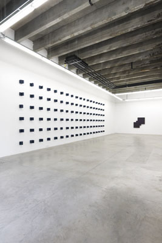 |
Galerie Georges Verney Carron, Lyon, France Février-Mai 2011/February-May 2011 |
 |
Whanki Museum, Seoul, Corée/Korea Novembre 2010-Janvier 2011/November 2010-January 2011 |
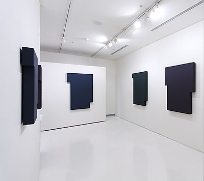 |
Song Art Gallery, Seoul, Corée/Korea Juillet-Aout 2009/July-August 2009 |
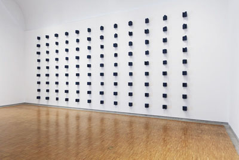 |
Whanki Museum, Seoul, Corée/Korea Septembre-Décembre/September-December 2008 |
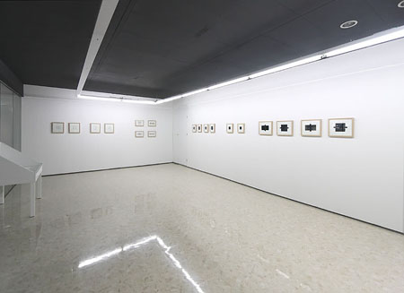 |
Na&Lee Hospital, Gimpo, Corée/Korea Juillet-Septembre/July-September 2008 |
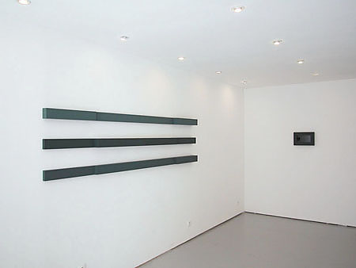 |
Granville Gallery, Granville, France Mai/May 2008 |
.jpg) |
Plus de réalité, Nantes, France Mai-juin/May-June 2008 |
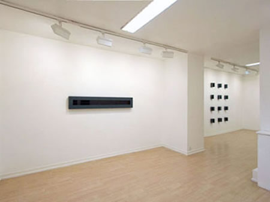 |
Galerie Oniris, Rennes, France Novembre/November 2007 |
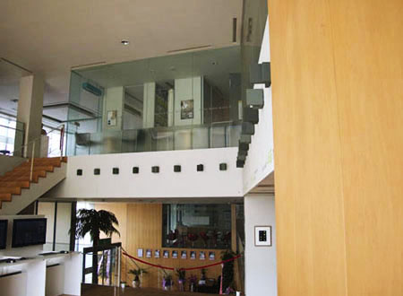 |
Na&Lee Hospital, Gimpo, Corée/Korea Juillet/July 2007 |
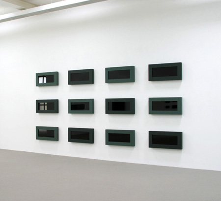 |
Galerie m Bochum, Allemagne/Germany Novembre/November 2005 - Janvier/January 2006 |
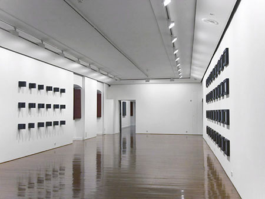 |
Palaccio Rivelligiado, Gijon, Espagne/Spain Janvier- février/January- February 2005 |